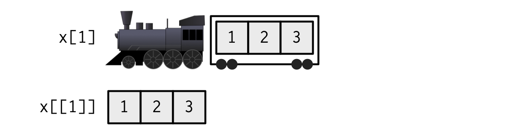

x = c(1,4,7); y = list(1,4,7)Subsetting
Announcements
- exam 1 date on schedule
. . .
- quiz 02
Subsetting
Subsetting in general
R has three subsetting operators ([, [[, and $). The behavior of these operators will depend on the object (class) they are being used with.
. . .
In general there are 6 different types of subsetting that can be performed:
Positive integer
Negative integer
Logical value
Empty
Zero valued / NULL
Character value (names)
[
Integer subsetting: values by index
Positive subsetting
x[1] # subset a vector get a vector[1] 1x[c(1,3)][1] 1 7x[c(1.9, 2.1)] # coercion[1] 1 4str(y[1]) # subset a list get a listList of 1
$ : num 1str(y[c(1.9, 2.1)]) # coercionList of 2
$ : num 1
$ : num 4Negative (exclusionary) subsetting
x[-1][1] 4 7str(y[-c(1,2)])List of 1
$ : num 7x[c(-1,2)]Error in x[c(-1, 2)]: only 0's may be mixed with negative subscriptsYou can’t mix positive and negative values!
Note that R starts indexing at 1.
Logical subsetting
Returns values that correspond to TRUE in the logical vector.
x = c(1, 4, 7, 12)x[c(TRUE, FALSE, TRUE, FALSE)][1] 1 7x[c(TRUE, FALSE)][1] 1 7. . .
Utility of this
x[x %% 2 == 0][1] 4 12dplyr::glimpse(cars)Rows: 50
Columns: 2
$ speed <dbl> 4, 4, 7, 7, 8, 9, 10, 10, 10, 11, 11, 12, 12, 12, 12, 13, 13, 13…
$ dist <dbl> 2, 10, 4, 22, 16, 10, 18, 26, 34, 17, 28, 14, 20, 24, 28, 26, 34…cars_with_high_speed =
cars[cars$speed > 9,]Empty and zero subsetting
x = c(1, 4, 7); y = list(1, 4, 7)Empty
Returns the original vector, this is not the same thing as subsetting with NULL.
x[][1] 1 4 7str(y[])List of 3
$ : num 1
$ : num 4
$ : num 7Zero subsetting
Same as subsetting with NULL
x[NULL]numeric(0)x[0]numeric(0)str(y[NULL]) list()str(y[0]) list()Character value subsetting
If the vector has names, selects elements whose names correspond to the values in the character vector.
x = c(a = 1, b = 4, c = 7)
x["a"]a
1 x[c("a", "a")]a a
1 1 y = list(a = 1, b = 4, c = 7)
str(y[c("b", "c")])List of 2
$ b: num 4
$ c: num 7This is a great way to subset because position is fragile, but the name is usually more robust as we manipulate our object.
Breaking subsetting
x = c(1, 4, 7); y = list(1, 4, 7)Out of bounds
- returns NA for atomic vector
- returns NULL for generic vector (list)
- no warning!
x[4][1] NAx[-4][1] 1 4 7str(y[4])List of 1
$ : NULLMissing
Subset with a missing value, we will get back a missing value (atomic vector) or NULL (list).
x[NA] # logical subsetting with length coercion[1] NA NA NAx[c(1,NA)] # integer subsetting[1] 1 NAstr(y[NA])List of 3
$ : NULL
$ : NULL
$ : NULL[[ and $
[[
Atomic vectors
[[ subsets like [ except it can only subset for a single value
x = c(a = 1, b = 4, c = 7)
x[1]a
1 x[[1]][1] 1x[[TRUE]][1] 1x[[1:2]]Error in x[[1:2]]: attempt to select more than one element in vectorIndexGeneric vectors
[[ subsets a single value, but returns the value - not a list containing that value like [.
y = list(a = 1, b = 4, c = 7:9)
y[2]$b
[1] 4y[[2]][1] 4y[[1:2]]Error in y[[1:2]]: subscript out of boundsy[[c(2,1)]][1] 4Hadley’s analogy 1

. . .

. . .

Hadley’s analogy 2

[[ vs $
$ is equivalent to [[ but it only works for named lists and it uses partial matching for names.
x = c("abc" = 1, "def" = 5)
x$abcError in x$abc: $ operator is invalid for atomic vectors. . .
$ is only for generic vectors
y = list("abc" = 1, "def" = 5)
y[["abc"]][1] 1y$abc[1] 1y$d [1] 5. . .
Be careful of the last one!
A common error
Why does the following code not work?
x = list(abc = 1:10, def = 10:1)
y = "abc"x[[y]] [1] 1 2 3 4 5 6 7 8 9 10x$yNULL. . .
The expression x$y gets directly interpreted as x[["y"]] by R, note the inclusion of the "s, this is not the same as the expression x[[y]].
Exercise
Below are 100 values,
x = c(56, 3, 17, 2, 4, 9, 6, 5, 19, 5, 2, 3, 5, 0, 13, 12, 6,
31, 10, 21, 8, 4, 1, 1, 2, 5, 16, 1, 3, 8, 1,
3, 4, 8, 5, 2, 8, 6, 18, 40, 10, 20, 1, 27, 2, 11, 14, 5, 7,
0, 3, 0, 7, 0, 8, 10, 10, 12, 8, 82,
21, 3, 34, 55, 18, 2, 9, 29, 1, 4, 7, 14, 7, 1, 2, 7,
4, 74, 5, 0, 3, 13, 2, 8, 1, 6, 13, 7, 1, 10,
5, 2, 4, 4, 14, 15, 4, 17, 1, 9)subset to accomplish each of the following:
Select every third value starting at position 2 in x. The first three entries should be
3, 4, 5Remove all values with an odd index (e.g. 1, 3, etc.)
Remove every 4th value, but only if it is odd.
Subsetting data frames
Since data frames have two dimensions, we can subset either rows, columns or both.
(df = data.frame(x = 1:3, y = c("A","B","C"), z = TRUE)) x y z
1 1 A TRUE
2 2 B TRUE
3 3 C TRUESubset rows
df[1, ] # first row x y z
1 1 A TRUEdf[c(1,3), ] # first and third row x y z
1 1 A TRUE
3 3 C TRUESubset columns
df[, 1] # first column[1] 1 2 3df[, 1:2] # first through second column x y
1 1 A
2 2 B
3 3 C. . .
Subset both
df[1:2,1:2] x y
1 1 A
2 2 BPreserving vs simplifying
Most of the time, R’s [ is a preserving operator, in that the returned object will always have the same type/class as the object being subset.
Confusingly, when used with some classes (e.g. data frame, matrix or array) [ becomes a simplifying operator (does not preserve type) - this behavior is instead controlled by the drop argument.
. . .
cars |>
head(3) speed dist
1 4 2
2 4 10
3 7 4for columns:
str(cars[, 1]) num [1:50] 4 4 7 7 8 9 10 10 10 11 ...str(cars[, 1, drop = FALSE])'data.frame': 50 obs. of 1 variable:
$ speed: num 4 4 7 7 8 9 10 10 10 11 ...for rows it’s the opposite:
str(cars[1, ])'data.frame': 1 obs. of 2 variables:
$ speed: num 4
$ dist : num 2str(cars[1, , drop = TRUE])List of 2
$ speed: num 4
$ dist : num 2Preserving vs simplifying summary
| Type | Simplifying | Preserving |
|---|---|---|
| Atomic Vector | x[[1]] |
x[1] |
| List | x[[1]] |
x[1] |
| Matrix / Array | x[[1]] x[1, ] x[, 1] |
x[1, , drop=FALSE] x[, 1, drop=FALSE] |
| Factor | x[1:4, drop=TRUE] |
x[1:4] x[[1]] |
| Data frame | x[, 1] x[[1]] |
x[, 1, drop=FALSE] x[1] |